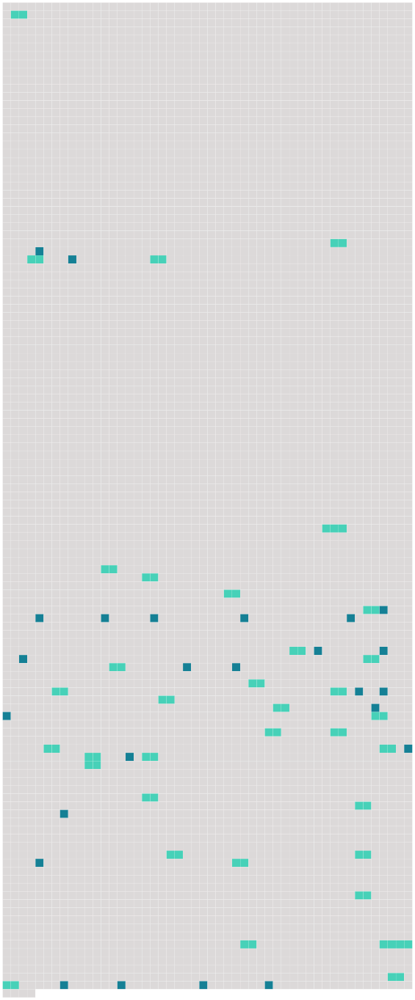

Longueur nb maillons : 60 mentions |
 |
C'est la première œuvre en date que nous ayons d'elle, et ce qui donne surtout du prix à ce petit cahier cartonné que nous avons sous les yeux, c'est qu'il contient un journal écrit en 1772 et 73, c'est-à-dire sous le règne de [Louis XV] [66 phrases] « Le 17, nous prîmes un carrosse de remise pour nous promener aux Tuileries ; c'est une des plus belles promenades de Paris ; elle se termine par la place de [Louis 15] , qui n'est pas encore achevée et qui sera superbe. [Sa] statue à cheval est au milieu. [2 phrases] C'est à la Muette que [le Roi] se repose lorsqu' [il] chasse dans le bois de Boulogne. L'appartement [du Roi] est meublé de damas vert, couleur de rose et blanc et orné de belles glaces ; celui de Mme du Baril est le plus joli de tous, il a un damas couleur de rose et blanc. [80 phrases]
Dans ce temps -là, on n'y allait pas tout voir en une après-midi comme aujourd'hui ; c'est qu'il y avait, en plus du Palais à visiter, ses habitants qui se trouvaient être [un Louis XV] , une dauphine qui s'appelait Marie-Antoinette, accompagnés de toute leur famille, sans oublier Mme Du Barry. [10 phrases] Nous avions grande envie de rester pour entendre la messe [du roi] où il y a une musique superbe, mais on nous dit que l'on ne pouvait se dispenser de se mettre à genoux, et nous aimâmes mieux nous en passer [ ô huguenotes!! [2 phrases] puis la salle du trône, où [le roi] reçoit les ambassadeurs en cérémonie. [5 phrases] « Nous y étions depuis quelque tems quand vint à passer la Dauphine qui allait au lever [du roi] [5 phrases] « Peu après, nous vîmes passer [le Roi] [qui] allait à la messe, suivi de [ses] pages et de beaucoup de seigneurs. [Il] est grand et brun, [a] l'air majestueux, le regard perçant et noble. [Il] avait un grand manteau rouge avec une croix du Saint-Esprit. Nous [le] vîmes revenir et de là nous allâmes voir dîner la Dauphine. [10 phrases] « À neuf heures, nous allâmes voir souper [le Roi] , [qui] soupe tous les dimanches en public avec [ses] enfans. La salle où [il] soupe n'est pas belle. [2 phrases] Dès que [le Roi] entra tous se levèrent. [1 phrases] [Le Roi] était en haut, le Dauphin à [sa] droite, la Dauphine à [sa] gauche. [5 phrases] Après eux étaient Mesdames de France, filles [du roi] [1 phrases] Elles ressemblent toutes [au roi] , sont fort grasses et superbement vêtues. [2 phrases] Derrière [le Roi] étaient [ses] seigneurs et [ses] gentilshommes de la chambre. [1 phrases]
Il n'y avait que [le Roi] qui eût un fauteuil ». [2 phrases] [Le Roi] parla un peu avec le duc de Fronsac et n' [adressa] point la parole à [ses] enfans. [2 phrases] « Quand ils eurent fini, le Dauphin donna à laver [au Roi] et ils sortirent. [5 phrases] « Le petit Trianon est un petit palais que [Louis 15] a fait bâtir. La chambre [du roi] est meublée d'une tapisserie bleue et argent. [2 phrases] « Entre la chambre [du Roi] et celle de Mme du Baril, il y a un cabinet de marbre blanc, fort bien sculpté. [1 phrases] C'est là où [le Roi] et [sa] maîtresse vont déjeuner. C'est un des grands plaisirs [du Roi] que de faire [son] caffé [lui -même] [1 phrases] « Dans les jardins il y a des serres chaudes où croissent des primeurs que l'on sert sur la table [du Roi] [12 phrases] « Tout autour du jardin, il y a douze petits pavillons quarrés, joints ensemble par des berceaux de feuillage, c'est là où logent les seigneurs qui accompagnent [le Roi] [2 phrases] [Louis 15] l'a achetée et l'a donnée à Mme du Baril.
[Il] y a fait bâtir un pavillon qui est un palais enchanté et qui a coûté deux millions … [13 phrases] « À la queue de la procession, viennent le comte d'Artois, petit-fils cadet [du Roi] , le comte de Provence et le Dauphin. [1 phrases]
[Le Roi] vient ensuite mis comme les autres cordons bleus, [il] avait l'air fatigué et ennuyé. « Nous profitons du temps qu'ils sont à la messe pour aller voir les appartemens [du Roi] [9 phrases] Il est le plus joli prince de toute la famille, il ressemble [au Roi] , il est blond, a de beaux yeux noirs, le nez aquilin, l'air noble et vif. [15 phrases]
« [Le Roi] dîne toujours en particulier avec Mme du Baril.
« En quittant ce beau séjour [du Roi de France] , nous fûmes bien surprises de trouver des mendians déguenillés qui demandaient l'aumône dans les escaliers du château, cela nous révolta beaucoup. [9 phrases] Elle est extrêmement haïe à Paris et à Versailles, on lui attribue tout le mal qui arrive en France, et on dit qu'elle est d'une très basse naissance et dépense prodigieusement [au Roi]
[Le Roi] est aussi fort haï de [ses] sujets, soit à cause de [sa] faiblesse, soit à cause des mauvais ministres qu' [il] a choisis ou des grandes dépenses qu' [il] fait pour Mme du Baril, mais par contre le Dauphin et la Dauphine sont chéris de tout le monde. |
 |
La ressource peut être téléchargée sur la page Ortolang
Si vous avez des questions ou vous voyez des erreurs, merci d'envoyer un mail à silvia.federzoni89@gmail.com
Site développé par S. Federzoni (contact)